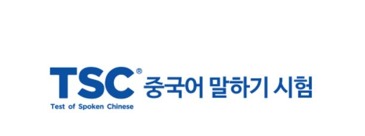

TSC
TSC(Test of Spoken Chinese)는 국내 최초의 CBT 방식의 중국어 Speaking Test로 중국어 학습자의 말하기 능력을 직접적으로 평가할 수 있는 실용적인 시험입니다.
우리나라와 역사적 문화적으로 밀접하게 관련되어 있는 중국은 앞으로 세계에서 정치적 경제적으로 매우 큰 비중을 차지하게 될 것입니다.
이런 예측에 따라 최근 다양한 분야에서 중국과의 교류가 나날이 확대되고 있으며, 원활하고 효과적인 중국어 의사 소통 능력의 중요성 또한 점점 더 크게 부각되고 있습니다.
국내 최대 어학 전문 기업인 YBM에서는 이러한 추세에 발맞추어 TSC 중국어 말하기 시험을 시행하고 있습니다.